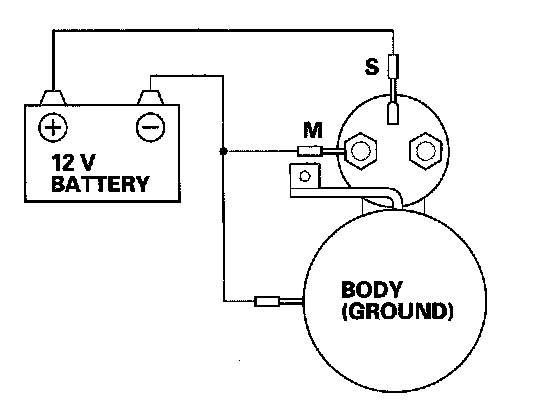
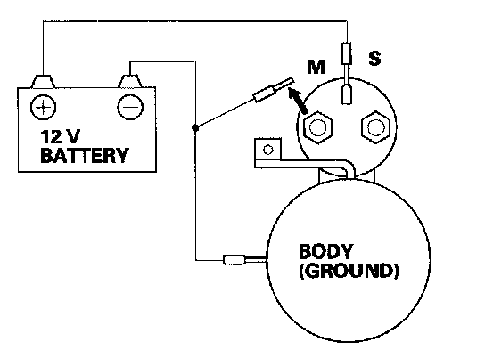
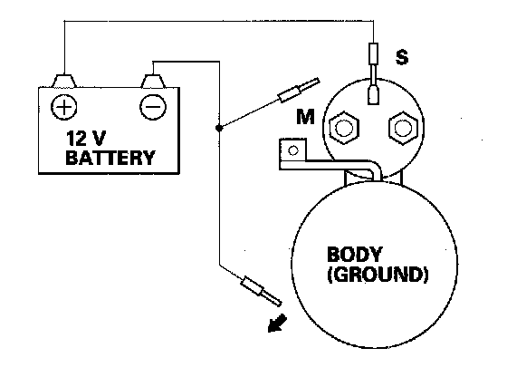
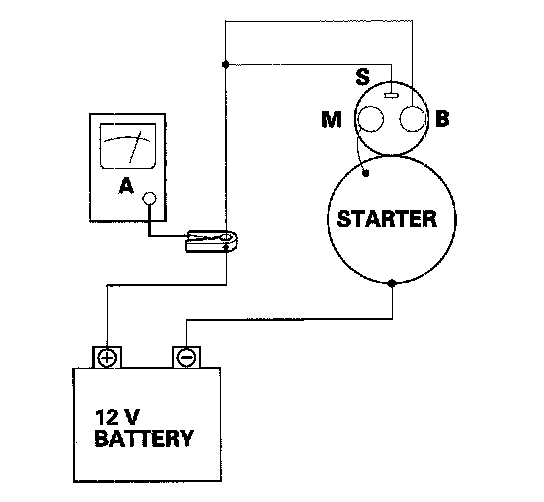

Starter Motor: Testing and Inspection
Starter Performance Test1. Disconnect the wire from the M terminal.

2. Make a connection for this test using the thickest (gauge) wire possible (preferably the same gauge as used on the vehicle).
NOTE: To avoid damaging the starter, never leave the battery connected for more than 10 seconds.
3. Connect the battery as shown. Make sure you disconnect the starter motor wire from the solenoid. If the starter pinion moves out, it is working properly.

4. Disconnect the battery from the M terminal. If the pinion does not retract, the hold-in coil of the solenoid is working properly.

5. Disconnect the battery from the starter body. If the pinion retracts immediately, it is working properly.
6. Clamp the starter firmly in a vise.
7. Reconnect the wire to the M terminal.

8. Connect the starter to the battery as shown in the diagram, and confirm that the motor starts and keeps rotating.
9. If the electric current meets the specification when the battery voltage is at 11.5 V, the starter is working properly.
Specification
Electric Current: 90 A or less